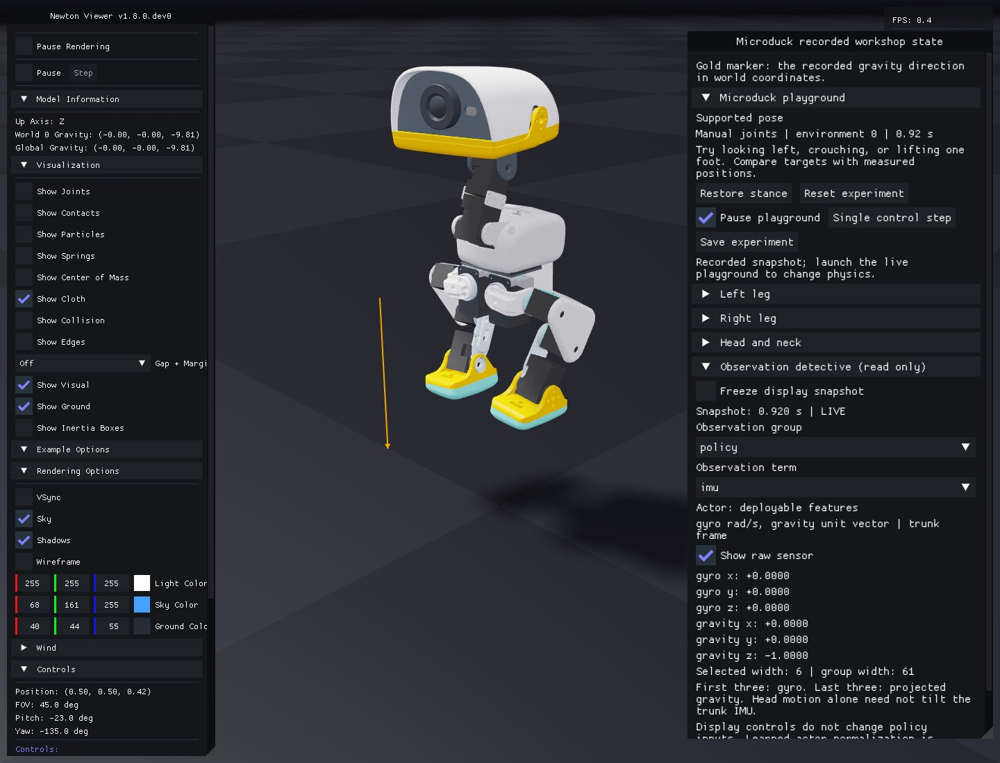

5. Become an observation detective¶
Predict: which signals change when you pitch the head, and which change only when the whole body tilts?
uv run --project environments/locomotion python scripts/locomotion/playground.py --mode observations
Open Observation detective (read only). Choose the policy group and joint_pos term. Values are labeled in the same named joint order used by the controller.
- Move
head_yaw. Find its changing entry; compare it with the measured joint angle. - Enable Show raw sensor. The raw encoder angle is absolute; the environment feature subtracts the default home angle. Try a knee, whose home angle is nonzero, to see the difference.
- Enable Freeze display snapshot, then move another joint. The snapshot and its displayed timestamp stay fixed while the live simulation continues. Unfreeze to see the latest values.
- Select imu. Predict which gyro/gravity components will change before moving the head. Compare supported and free-base scenes.
Find the group, term and raw-sensor controls

The panel uses the real widget code and a recorded physical snapshot. The live gold arrow also rotates the sampled trunk-frame gravity into world coordinates. It is displayed beside the sampled trunk, offset 0.12 m along world Y and 0.03 m upward for visibility. Freezing the display freezes that arrow and its pose together. Head movement alone leaves the supported trunk's gyro/gravity unchanged.
Freeze display snapshot affects inspection alone. Pause playground stops control stepping; Single control step advances one 20 ms interval. Neither display control changes the policy's input vector. The displayed environment features precede the learned normalization embedded inside the actor.
flowchart LR
S[Physical IMU and encoders] --> F[Environment features]
C[Desired commands and previous action] --> F
F --> A[Actor normalization and policy]
A --> M[Motor targets]
F --> D[Copied display snapshot]
S --> D
D --> I[Freeze, choose term, inspect]
The inspector reads a copy of the same named observation groups. A separate telemetry group supplies display-only physical signals, including the terminal state before autoreset. The actor and critic widths remain unchanged.
The 61-value actor vector contains angular velocity and projected gravity (6), joint-position offsets (14), joint velocities (14), previous actions (14), desired velocity (3), head-pose commands (4), and body-pose commands (6). Head/body command slots are retained but held at zero initially.
Projected gravity expresses the world down direction in the robot/sensor frame. Tilting the robot changes its components even when its world position stays fixed. Joint motion can change position/velocity signals without rotating the base; do not expect a head movement alone to change a base-mounted IMU's gravity direction.
The critic receives 76 values, including simulation-only linear velocity and foot information. It learns a value estimate during training. The deployed actor must not silently receive those privileged values.
flowchart LR
Shared[IMU, encoders, previous action and commands] --> Actor[61-value actor input]
Shared --> Critic[76-value critic input]
Privileged[Simulation linear velocity and foot signals] --> Critic
Actor --> Action[14 servo actions]
Critic --> Learning[Training value estimate]
Only the actor branch is exported to the robot. To check individual input indices and units, use the verified bundle layout. The critic's extra information can improve learning without becoming a sensor available on hardware.
Switch the group to critic and find base_lin_vel, then foot_contact_forces. These are privileged simulation signals. The force feature is sign(F) × log(1 + |F|), with F measured in newtons; its displayed number is not a force in newtons. Each term's panel identifies its coordinates and units.
Try the gravity cue: in the supported scene, move only the head. The trunk-mounted IMU and gold arrow should stay unchanged. Repeat with --free and watch a body tilt: the world down arrow stays downward while its coordinates in the tilted trunk change. Use a reset to retry. The arrow is display geometry and applies no force.
During training, the velocity-command manager resamples commands at its configured interval and selects standing episodes according to rel_standing_envs. The evaluation and scripted driving tools explicitly supply their own schedules. A new slider command is applied at the next control boundary; it is not a new motor target until the frozen actor processes it. Head/body command slots stay zero in this teaching task.
Command velocities use the task's declared heading/world conventions. Forward/lateral linear tracking is measured in the heading frame; yaw tracking uses world angular velocity about Z. Units are m/s, rad/s, and radians unless explicitly converted for display.
Observation inspection never removes a signal from the policy. Removing a field changes the model contract and requires a new architecture/configuration and training run.
Record: one signal that changed, one that stayed fixed, and why. Compare supported and free-base scenes if you need a body tilt.